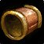

Cuffs of Devastation
Cuffs of DevastationCuffs of Devastation103 armor, 22 stamina, 20 intellect, 19 spirit, 34 spell damage, 34 healing power, 14 spell crit rating (0.63%)Sockets yellow · Socket bonus 3 staminaDrops from Rage Winterchill, Mount Hyjal
103 armor, 22 stamina, 20 intellect, 19 spirit, 34 spell damage, 34
healing power, 14 spell crit rating (0.63%)
Sockets yellow · Socket bonus 3 stamina
Drops from Rage Winterchill, Mount Hyjal
What influencers say
Showing 5 of 8 captured remarks, widest reach first, with every view
represented
Sarthe
Sarthe · 81:42
77k views
Puts it on Mage
Sarthe calls the bracer strong and puts it in the mage pile as he runs
through the Mount Hyjal first-boss loot.
Zatar (Classic Wow Builds)
Zatar (Classic Wow Builds) · 27:05
58k views
Puts it on Arcane Mage, Balance Druid, Elemental Shaman and Warlock, not
Shadow Priest
Zatar says it is best in slot only for arcane mage, slightly ahead of
the haste wrists, and orders interest arcane, then boomkin, elemental,
warlock and shadow priest last since the crit is wasted on shadow.
Crix
Crix · 6:37
45k views
Keeps it off Warlock
Crix tells warlocks not to worry about these because Bracers of Nimble
Thought and their haste are clearly better; anything below is only a
stopgap.
Joardee
Joardee · 17:39
23k views
Puts it on Mage
Joardee says these should simply be mage best-in-slot and doubts anyone
else would take them over the crafted haste bracers.
Fearstreet 528
Fearstreet 528 · 0:51
9k views
Puts it on Arcane Mage
Fearstreet has arcane mages replace Mindstorm Wristbands with these for
roughly 20 to 30 DPS, or about 100 DPS in his own case coming from
Bracers of Havoc.
What routing this item elsewhere costs, each spec measured on its tier
profile with only this slot moving. An ordering derived from
measurement; who receives the drop is the council's call.
| Spec | Standing | At the tier set |
|---|---|---|
| Arcane Mage | BIS | +16.0 ± 1.43 over the next best, Focused Mana Bindings |
| Elemental Shaman | Upgrade | -1.3 ± 1.32 behind Bands of the Coming Storm |
| Balance Druid | Upgrade | -11.1 ± 1.19 behind Bracers of Nimble Thought |
| Shadow Priest | Upgrade | -12.8 ± 0.40 behind Bracers of Nimble Thought (tied with Balance Druid) |
| Affliction Warlock | Upgrade | -14.4 ± 1.36 behind Bracers of Nimble Thought (tied with Shadow Priest) |
| Destruction Warlock | Upgrade | -24.6 ± 1.70 behind Bracers of Nimble Thought |
Showing all 7 spec cards.
No specs are selected, so no cards are showing. Use Show every spec to bring all of them back.
Arcane Mage
StandingBIS
Constraints
Spell hit cap16%spells
Arcane Focus-10%
Gear needs6%
Entry set6.6%clear
by 0.6%
Tier set, Tier 6 legs6.1%clear
by 0.1%
No crit cap.
Global cooldown floor at 50% spell haste, which nothing rostered reaches
from gear this phase.
Delta
Cuffs of DevastationCuffs of
Devastation103 armor, 22 stamina, 20
intellect, 19 spirit, 34 spell damage, 34 healing power, 14 spell crit
rating (0.63%)Sockets yellow ·
Socket bonus 3 staminaDrops from
Rage Winterchill, Mount Hyjal in Arcane Mage terms EPV 47.88
| Stat | Over best Phase 3 off-piece, Tailoring Bracers of Nimble ThoughtBracers of Nimble Thought103 armor, 27 stamina, 20 intellect, 34 spell damage, 34 healing power, 28 spell haste ratingCrafted, Tailoring EPV 59.67 | Over next best off-piece, Black
Temple
 Focused Mana BindingsFocused Mana Bindings103 armor, 27 stamina, 20 intellect, 42 spell damage, 42 healing power, 19 spell hit rating (1.51%)Drops from Shade of Akama, Black Temple EPV 40.15 |
Over best pre-phase off-piece, Tempest Keep Mindstorm WristbandsMindstorm Wristbands94 armor, 13 stamina, 13 intellect, 36 spell damage, 36 healing power, 23 spell crit rating (1.04%)Drops from Al'ar, Tempest Keep EPV 36.69 | Over next best off-piece, Karazhan Ravager's CuffsRavager's Cuffs85 armorDrops from Rokad the Ravager, Karazhan EPV 35.64 | ||||
|---|---|---|---|---|---|---|---|---|
| Change | Converted | Change | Converted | Change | Converted | Change | Converted | |
| armor | 0 | 0 | +9 | +18 | ||||
| stamina | -5 | -5 | +9 | +22 | ||||
| intellect | 0 | 0 | +7 | +0.10% spell crit · +2.01 spell damage | +20 | +0.29% spell crit · +5.75 spell damage | ||
| spirit | +19 | +19 | +19 | +19 | ||||
| spell damage | 0 | -8 | -2 | +34 | ||||
| healing power | 0 | -8 | -2 | +34 | ||||
| spell hit | 0 | -19 | -1.51% | 0 | 0 | |||
| spell crit | +14 | +0.63% | +14 | +0.63% | -9 | -0.41% | +14 | +0.63% |
| spell haste rating | -28 | -28 spell haste rating | 0 | 0 | 0 | |||
| Stat Highlights (Total Change) | +0.63% spell crit -28 spell haste rating | -8 spell damage -8 healing power -1.51% spell hit +0.63% spell crit | -0.31% spell crit +0.01 spell damage -2 healing power | +0.92% spell crit +39.75 spell damage +34 healing power | ||||
No Tier 6 and no Tier 5 is ranked for this spec in this slot, so that
comparison is not shown. A weapon the workbook does not rank cannot be
compared against, and a spec with no captured gear set has nothing
recorded to carry in.
Measured
This spec measures 2301.2 at entry, 2320.7 at the tier set and 2534.4 at
best in slot.
| Item | DPS | Against this item |
|---|---|---|
| Cuffs of Devastation (this item, in the best-in-slot set) | 2339.2 ± 1.02 | +0.0 |
| Focused Mana Bindings | 2323.2 ± 1.00 | -16.0 ± 1.43 |
| Bracers of Nimble Thought | 2321.3 ± 1.00 | -17.9 ± 1.43 |
| Mindstorm Wristbands (worn at the tier set) | 2320.7 ± 1.01 | -18.5 ± 1.44 |
| Vindicator's Silk Cuffs | 2318.2 ± 1.01 | -21.0 ± 1.44 |
| Veteran's Silk Cuffs | 2308.8 ± 1.00 | -30.4 ± 1.43 |
| Vindicator's Dreadweave Cuffs | 2306.5 ± 1.00 | -32.7 ± 1.43 |
| Ravager's Cuffs | 2257.4 ± 0.97 | -81.8 ± 1.41 |
Elemental Shaman
StandingUpgrade
Constraints
Spell hit cap16%spells
Elemental Precision-6%
Nature's Guidance-3%
Totem of Wrath-3%
Gear needs4%
Entry set4.1%clear
by 0.1%
Tier set, Tier 6 head and shoulder and
chest and hands8.2%clear by 4.1%
No crit cap.
Part of this spec's damage is periodic, and periodic damage cannot crit
in this patch, so crit reaches less of its output than the character
sheet suggests.
Global cooldown floor at 50% spell haste, which nothing rostered reaches
from gear this phase.
Delta
Cuffs of DevastationCuffs of
Devastation103 armor, 22 stamina, 20
intellect, 19 spirit, 34 spell damage, 34 healing power, 14 spell crit
rating (0.63%)Sockets yellow ·
Socket bonus 3 staminaDrops from
Rage Winterchill, Mount Hyjal in Elemental Shaman terms EPV 60.40
| Stat | Over best Phase 3 off-piece, Tailoring Bracers of Nimble ThoughtBracers of Nimble Thought103 armor, 27 stamina, 20 intellect, 34 spell damage, 34 healing power, 28 spell haste ratingCrafted, Tailoring EPV 73.40 | Over best pre-phase off-piece, Karazhan Ravager's CuffsRavager's Cuffs85 armorDrops from Rokad the Ravager, Karazhan EPV 59.00 | Over next best off-piece, Black Temple Bands of the Coming StormBands of the Coming Storm432 armor, 28 stamina, 28 intellect, 34 spell damage, 34 healing power, 21 spell crit rating (0.95%)Drops from Supremus, Black Temple EPV 58.50 | Over next best off-piece, Tempest Keep Mindstorm WristbandsMindstorm Wristbands94 armor, 13 stamina, 13 intellect, 36 spell damage, 36 healing power, 23 spell crit rating (1.04%)Drops from Al'ar, Tempest Keep EPV 57.71 | ||||
|---|---|---|---|---|---|---|---|---|
| Change | Converted | Change | Converted | Change | Converted | Change | Converted | |
| armor | 0 | +18 | -329 | +9 | ||||
| stamina | -5 | +22 | -6 | +9 | ||||
| intellect | 0 | +20 | +0.25% spell crit | -8 | -0.10% spell crit | +7 | +0.09% spell crit | |
| spirit | +19 | +19 | +19 | +19 | ||||
| spell damage | 0 | +34 | 0 | -2 | ||||
| healing power | 0 | +34 | 0 | -2 | ||||
| spell crit | +14 | +0.63% | +14 | +0.63% | -7 | -0.32% | -9 | -0.41% |
| spell haste rating | -28 | -28 spell haste rating | 0 | 0 | 0 | |||
| Stat Highlights (Total Change) | +0.63% spell crit -28 spell haste rating | +0.88% spell crit +34 spell damage +34 healing power | -0.42% spell crit | -0.32% spell crit -2 spell damage -2 healing power | ||||
No Tier 6 and no Tier 5 is ranked for this spec in this slot, so that
comparison is not shown. A weapon the workbook does not rank cannot be
compared against, and a spec with no captured gear set has nothing
recorded to carry in.
Measured
This spec measures 1718.8 at entry, 1893.9 at the tier set and 2130.0 at
best in slot.
| Item | DPS | Against this item |
|---|---|---|
| Bands of the Coming Storm | 1896.4 ± 0.93 | +1.3 ± 1.32 |
| Cuffs of Devastation (this item) | 1895.1 ± 0.93 | +0.0 |
| Mindstorm Wristbands (worn at the tier set) | 1893.9 ± 0.94 | -1.2 ± 1.32 |
| Bracers of Nimble Thought (in the best-in-slot set) | 1892.2 ± 0.92 | -2.9 ± 1.31 |
| Windhawk Bracers | 1891.1 ± 0.93 | -4.0 ± 1.32 |
| Vindicator's Mail Bracers | 1887.4 ± 0.93 | -7.7 ± 1.32 |
| Focused Mana Bindings | 1884.8 ± 0.93 | -10.3 ± 1.32 |
| Ravager's Cuffs | 1845.8 ± 0.93 | -49.3 ± 1.32 |
Balance Druid
StandingUpgrade
Constraints
Spell hit cap16%spells
Balance of Power-4%
Totem of Wrath-3%
Gear needs9%
Entry set8.5%short
by 0.6%
Tier set, Tier 6 head and shoulder and
chest and hands9.4%clear by 0.4%
The entry set holds four Tier 5 pieces, at the head, the shoulder, the
chest and the hands, which is the Tier 5 four-piece, so either token
breaks it; both tokens are raw EPV gains, and this set trades those four
for four Tier 6 pieces, at the head, the shoulder, the chest and the
hands.
No crit cap.
Part of this spec's damage is periodic, and periodic damage cannot crit
in this patch, so crit reaches less of its output than the character
sheet suggests.
Global cooldown floor at 50% spell haste, which nothing rostered reaches
from gear this phase.
Delta
Cuffs of DevastationCuffs of
Devastation103 armor, 22 stamina, 20
intellect, 19 spirit, 34 spell damage, 34 healing power, 14 spell crit
rating (0.63%)Sockets yellow ·
Socket bonus 3 staminaDrops from
Rage Winterchill, Mount Hyjal in Balance Druid terms EPV 68.46
| Stat | Over best Phase 3 off-piece, Black Temple Focused Mana BindingsFocused Mana Bindings103 armor, 27 stamina, 20 intellect, 42 spell damage, 42 healing power, 19 spell hit rating (1.51%)Drops from Shade of Akama, Black Temple EPV 72.40 | Over next best off-piece, Black Temple Elunite Empowered BracersElunite Empowered Bracers194 armor, 27 stamina, 22 intellect, 34 spell damage, 34 healing power, 19 spell hit rating (1.51%)Drops from Reliquary of Souls, Black Temple EPV 68.64 | Over next best off-piece, Tailoring Bracers of Nimble ThoughtBracers of Nimble Thought103 armor, 27 stamina, 20 intellect, 34 spell damage, 34 healing power, 28 spell haste ratingCrafted, Tailoring EPV 64.00 | Over best pre-phase off-piece, Karazhan Ravager's CuffsRavager's Cuffs85 armorDrops from Rokad the Ravager, Karazhan EPV 59.00 | ||||
|---|---|---|---|---|---|---|---|---|
| Change | Converted | Change | Converted | Change | Converted | Change | Converted | |
| armor | 0 | -91 | 0 | +18 | ||||
| stamina | -5 | -5 | -5 | +22 | ||||
| intellect | 0 | -2 | -0.03% spell crit · -0.50 spell damage · -0.50 healing power | 0 | +20 | +0.25% spell crit · +5 spell damage · +5 healing power | ||
| spirit | +19 | +19 | +19 | +19 | ||||
| spell damage | -8 | 0 | 0 | +34 | ||||
| healing power | -8 | 0 | 0 | +34 | ||||
| spell hit | -19 | -1.51% | -19 | -1.51% | 0 | 0 | ||
| spell crit | +14 | +0.63% | +14 | +0.63% | +14 | +0.63% | +14 | +0.63% |
| spell haste rating | 0 | 0 | -28 | -28 spell haste rating | 0 | |||
| Stat Highlights (Total Change) | -8 spell damage -8 healing power -1.51% spell hit +0.63% spell crit | +0.61% spell crit -0.50 spell damage -0.50 healing power -1.51% spell hit | +0.63% spell crit -28 spell haste rating | +0.88% spell crit +39 spell damage +39 healing power | ||||
No Tier 6 and no Tier 5 is ranked for this spec in this slot, so that
comparison is not shown. A weapon the workbook does not rank cannot be
compared against, and a spec with no captured gear set has nothing
recorded to carry in.
Measured
This spec measures 1660.6 at entry, 1705.0 at the tier set and 1946.7 at
best in slot.
| Item | DPS | Against this item |
|---|---|---|
| Bracers of Nimble Thought (in the best-in-slot set) | 1719.3 ± 0.85 | +11.1 ± 1.19 |
| Cuffs of Devastation (this item) | 1708.2 ± 0.83 | +0.0 |
| Mindstorm Wristbands (worn at the tier set) | 1705.0 ± 0.83 | -3.2 ± 1.17 |
| Windhawk Bracers | 1703.1 ± 0.83 | -5.1 ± 1.17 |
| Focused Mana Bindings | 1701.9 ± 0.83 | -6.3 ± 1.17 |
| Elunite Empowered Bracers | 1697.3 ± 0.83 | -10.9 ± 1.17 |
| Veteran's Silk Cuffs | 1691.7 ± 0.83 | -16.5 ± 1.17 |
| Ravager's Cuffs | 1658.2 ± 0.82 | -50.0 ± 1.17 |
Shadow Priest
StandingUpgrade
Constraints
Spell hit cap16%spells
Shadow Focus-10%
Gear needs6%
Entry set7.3%clear
by 1.3%
Tier set, Tier 6 head and shoulder and
chest and hands7.9%clear by 1.9%
No crit cap.
Part of this spec's damage is periodic, and periodic damage cannot crit
in this patch, so crit reaches less of its output than the character
sheet suggests.
Global cooldown floor at 50% spell haste, which nothing rostered reaches
from gear this phase.
Delta
Cuffs of DevastationCuffs of
Devastation103 armor, 22 stamina, 20
intellect, 19 spirit, 34 spell damage, 34 healing power, 14 spell crit
rating (0.63%)Sockets yellow ·
Socket bonus 3 staminaDrops from
Rage Winterchill, Mount Hyjal in Shadow Priest terms EPV 51.84
| Stat | Over best Phase 3 off-piece, Tailoring Bracers of Nimble ThoughtBracers of Nimble Thought103 armor, 27 stamina, 20 intellect, 34 spell damage, 34 healing power, 28 spell haste ratingCrafted, Tailoring EPV 63.24 | Over best pre-phase off-piece, Karazhan Ravager's CuffsRavager's Cuffs85 armorDrops from Rokad the Ravager, Karazhan EPV 59.00 | Over next best off-piece, Black Temple Focused Mana BindingsFocused Mana Bindings103 armor, 27 stamina, 20 intellect, 42 spell damage, 42 healing power, 19 spell hit rating (1.51%)Drops from Shade of Akama, Black Temple EPV 57.85 | Over next best off-piece, Shadowmoon Valley Illidari BindingsIllidari Bindings61 armor EPV 47.00 | ||||
|---|---|---|---|---|---|---|---|---|
| Change | Converted | Change | Converted | Change | Converted | Change | Converted | |
| armor | 0 | +18 | 0 | +42 | ||||
| stamina | -5 | +22 | -5 | +22 | ||||
| intellect | 0 | +20 | +0.25% spell crit | 0 | +20 | +0.25% spell crit | ||
| spirit | +19 | +19 | +19 | +19 | ||||
| spell damage | 0 | +34 | -8 | +34 | ||||
| healing power | 0 | +34 | -8 | +34 | ||||
| spell hit | 0 | 0 | -19 | -1.51% | 0 | |||
| spell crit | +14 | +0.63% | +14 | +0.63% | +14 | +0.63% | +14 | +0.63% |
| spell haste rating | -28 | -28 spell haste rating | 0 | 0 | 0 | |||
| Stat Highlights (Total Change) | +0.63% spell crit -28 spell haste rating | +0.88% spell crit +34 spell damage +34 healing power | -8 spell damage -8 healing power -1.51% spell hit +0.63% spell crit | +0.88% spell crit +34 spell damage +34 healing power | ||||
No Tier 6 and no Tier 5 is ranked for this spec in this slot, so that
comparison is not shown. A weapon the workbook does not rank cannot be
compared against, and a spec with no captured gear set has nothing
recorded to carry in.
Measured
This spec measures 1452.1 at entry, 1497.8 at the tier set and 1577.9 at
best in slot.
| Item | DPS | Against this item |
|---|---|---|
| Bracers of Nimble Thought (worn at the tier set, in the best-in-slot set) | 1497.8 ± 0.29 | +12.8 ± 0.40 |
| Cuffs of Devastation (this item) | 1485.0 ± 0.28 | +0.0 |
| Focused Mana Bindings | 1484.8 ± 0.28 | -0.2 ± 0.40 |
| Bracers of Havok | 1481.3 ± 0.28 | -3.7 ± 0.40 |
| Vindicator's Silk Cuffs | 1478.2 ± 0.28 | -6.8 ± 0.40 |
| Ravager's Cuffs | 1461.2 ± 0.27 | -23.8 ± 0.39 |
| Illidari Bindings | 1461.2 ± 0.27 | -23.8 ± 0.39 |
| Elementalist Bracelets | 1461.2 ± 0.27 | -23.8 ± 0.39 |
Priest Healer
StandingUpgrade
Constraints
No hit cap applies to this spec.
No crit cap.
Global cooldown floor at 50% spell haste, which nothing rostered reaches
from gear this phase.
Delta
Cuffs of DevastationCuffs of
Devastation103 armor, 22 stamina, 20
intellect, 19 spirit, 34 spell damage, 34 healing power, 14 spell crit
rating (0.63%)Sockets yellow ·
Socket bonus 3 staminaDrops from
Rage Winterchill, Mount Hyjal in Priest Healer terms EPV 93.69
| Stat | Over best Phase 3 off-piece, Hyjal Summit Bracers of MartyrdomBracers of Martyrdom103 armor, 15 stamina, 20 intellect, 28 spirit, 22 spell damage, 64 healing powerSockets blue · Socket bonus 4 healing power, 2 spell damageDrops from Rage Winterchill, Mount Hyjal EPV 161.70 | Over next best off-piece, Black Temple Wristbands of Divine InfluenceWristbands of Divine Influence103 armor, 24 stamina, 21 intellect, 28 spirit, 21 spell damage, 62 healing powerDrops from Shade of Akama, Black Temple EPV 144.96 | Over best pre-phase off-piece, Karazhan Ravager's CuffsRavager's Cuffs85 armorDrops from Rokad the Ravager, Karazhan EPV 120.59 | Over next best off-piece, Karazhan Bands of IndwellingBands of Indwelling85 armor, 22 stamina, 18 intellect, 20 spirit, 16 spell damage, 46 healing powerDrops from Maiden of Virtue, Karazhan EPV 109.84 | ||||
|---|---|---|---|---|---|---|---|---|
| Change | Converted | Change | Converted | Change | Converted | Change | Converted | |
| armor | 0 | 0 | +18 | +18 | ||||
| stamina | +7 | -2 | +22 | 0 | ||||
| intellect | 0 | -1 | -0.01% spell crit | +20 | +0.25% spell crit | +2 | +0.03% spell crit | |
| spirit | -9 | -2.25 spell damage · -2.25 healing power | -9 | -2.25 spell damage · -2.25 healing power | +19 | +4.75 spell damage · +4.75 healing power | -1 | -0.25 spell damage · -0.25 healing power |
| spell damage | +12 | +13 | +34 | +18 | ||||
| healing power | -30 | -28 | +34 | -12 | ||||
| spell crit | +14 | +0.63% | +14 | +0.63% | +14 | +0.63% | +14 | +0.63% |
| Stat Highlights (Total Change) | +9.75 spell damage -32.25 healing power +0.63% spell crit | +0.62% spell crit +10.75 spell damage -30.25 healing power | +0.88% spell crit +38.75 spell damage +38.75 healing power | +0.66% spell crit +17.75 spell damage -12.25 healing power | ||||
No Tier 6 and no Tier 5 is ranked for this spec in this slot, so that
comparison is not shown. A weapon the workbook does not rank cannot be
compared against, and a spec with no captured gear set has nothing
recorded to carry in.
Affliction Warlock
StandingUpgrade
Constraints
Spell hit cap16%spells
Totem of Wrath-3%
Gear needs13.1%
The Suppression talent does not cover this spec's filler spell, so none
of it counts.
Entry set16.1%clear
by 3%
Tier set, Tier 6 head and shoulder and
hands18.3%clear by 5.2%
No crit cap.
Part of this spec's damage is periodic, and periodic damage cannot crit
in this patch, so crit reaches less of its output than the character
sheet suggests.
Global cooldown floor at 50% spell haste, which nothing rostered reaches
from gear this phase.
Delta
Cuffs of DevastationCuffs of
Devastation103 armor, 22 stamina, 20
intellect, 19 spirit, 34 spell damage, 34 healing power, 14 spell crit
rating (0.63%)Sockets yellow ·
Socket bonus 3 staminaDrops from
Rage Winterchill, Mount Hyjal in Affliction Warlock terms EPV 58.79
| Stat | Over best Phase 3 off-piece, Black Temple Focused Mana BindingsFocused Mana Bindings103 armor, 27 stamina, 20 intellect, 42 spell damage, 42 healing power, 19 spell hit rating (1.51%)Drops from Shade of Akama, Black Temple EPV 72.24 | Over next best off-piece, Tailoring Bracers of Nimble ThoughtBracers of Nimble Thought103 armor, 27 stamina, 20 intellect, 34 spell damage, 34 healing power, 28 spell haste ratingCrafted, Tailoring EPV 69.07 | Over best pre-phase off-piece, Karazhan Ravager's CuffsRavager's Cuffs85 armorDrops from Rokad the Ravager, Karazhan EPV 54.16 | Over next best off-piece, Tempest Keep Mindstorm WristbandsMindstorm Wristbands94 armor, 13 stamina, 13 intellect, 36 spell damage, 36 healing power, 23 spell crit rating (1.04%)Drops from Al'ar, Tempest Keep EPV 51.37 | ||||
|---|---|---|---|---|---|---|---|---|
| Change | Converted | Change | Converted | Change | Converted | Change | Converted | |
| armor | 0 | 0 | +18 | +9 | ||||
| stamina | -5 | -5 | +22 | +9 | ||||
| intellect | 0 | 0 | +20 | +0.24% spell crit | +7 | +0.09% spell crit | ||
| spirit | +19 | +19 | +19 | +19 | ||||
| spell damage | -8 | 0 | +34 | -2 | ||||
| healing power | -8 | 0 | +34 | -2 | ||||
| spell hit | -19 | -1.51% | 0 | 0 | 0 | |||
| spell crit | +14 | +0.63% | +14 | +0.63% | +14 | +0.63% | -9 | -0.41% |
| spell haste rating | 0 | -28 | -28 spell haste rating | 0 | 0 | |||
| Stat Highlights (Total Change) | -8 spell damage -8 healing power -1.51% spell hit +0.63% spell crit | +0.63% spell crit -28 spell haste rating | +0.88% spell crit +34 spell damage +34 healing power | -0.32% spell crit -2 spell damage -2 healing power | ||||
No Tier 6 and no Tier 5 is ranked for this spec in this slot, so that
comparison is not shown. A weapon the workbook does not rank cannot be
compared against, and a spec with no captured gear set has nothing
recorded to carry in.
Measured
This spec measures 1932.8 at entry, 1964.3 at the tier set and 2218.7 at
best in slot.
| Item | DPS | Against this item |
|---|---|---|
| Bracers of Nimble Thought (in the best-in-slot set) | 1981.6 ± 0.96 | +14.4 ± 1.36 |
| Cuffs of Devastation (this item) | 1967.2 ± 0.96 | +0.0 |
| Mindstorm Wristbands (worn at the tier set) | 1964.3 ± 0.95 | -2.9 ± 1.35 |
| Focused Mana Bindings | 1959.3 ± 0.96 | -7.9 ± 1.36 |
| Crystalweave Bracers | 1957.8 ± 0.95 | -9.4 ± 1.35 |
| Vindicator's Silk Cuffs | 1955.8 ± 0.95 | -11.4 ± 1.35 |
| Veteran's Silk Cuffs | 1949.4 ± 0.95 | -17.8 ± 1.35 |
| Ravager's Cuffs | 1919.7 ± 0.94 | -47.5 ± 1.34 |
Destruction Warlock
StandingUpgrade
Constraints
Spell hit cap16%spells
Totem of Wrath-3%
Gear needs13.1%
No hit talent exists for this spec.
Entry set13.5%clear
by 0.4%
Tier set, Tier 6 head and shoulder and
hands15.4%clear by 2.3%
No crit cap.
Global cooldown floor at 50% spell haste, which nothing rostered reaches
from gear this phase.
Delta
Cuffs of DevastationCuffs of
Devastation103 armor, 22 stamina, 20
intellect, 19 spirit, 34 spell damage, 34 healing power, 14 spell crit
rating (0.63%)Sockets yellow ·
Socket bonus 3 staminaDrops from
Rage Winterchill, Mount Hyjal in Destruction Warlock terms EPV 76.65
| Stat | Over best Phase 3 off-piece, Tailoring Bracers of Nimble ThoughtBracers of Nimble Thought103 armor, 27 stamina, 20 intellect, 34 spell damage, 34 healing power, 28 spell haste ratingCrafted, Tailoring EPV 90.29 | Over next best off-piece, Black Temple Focused Mana BindingsFocused Mana Bindings103 armor, 27 stamina, 20 intellect, 42 spell damage, 42 healing power, 19 spell hit rating (1.51%)Drops from Shade of Akama, Black Temple EPV 90.25 | Over best pre-phase off-piece, Karazhan Ravager's CuffsRavager's Cuffs85 armorDrops from Rokad the Ravager, Karazhan EPV 69.74 | Over next best off-piece, Tempest Keep Mindstorm WristbandsMindstorm Wristbands94 armor, 13 stamina, 13 intellect, 36 spell damage, 36 healing power, 23 spell crit rating (1.04%)Drops from Al'ar, Tempest Keep EPV 67.13 | ||||
|---|---|---|---|---|---|---|---|---|
| Change | Converted | Change | Converted | Change | Converted | Change | Converted | |
| armor | 0 | 0 | +18 | +9 | ||||
| stamina | -5 | -5 | +22 | +9 | ||||
| intellect | 0 | 0 | +20 | +0.24% spell crit | +7 | +0.09% spell crit | ||
| spirit | +19 | +19 | +19 | +19 | ||||
| spell damage | 0 | -8 | +34 | -2 | ||||
| healing power | 0 | -8 | +34 | -2 | ||||
| spell hit | 0 | -19 | -1.51% | 0 | 0 | |||
| spell crit | +14 | +0.63% | +14 | +0.63% | +14 | +0.63% | -9 | -0.41% |
| spell haste rating | -28 | -28 spell haste rating | 0 | 0 | 0 | |||
| Stat Highlights (Total Change) | +0.63% spell crit -28 spell haste rating | -8 spell damage -8 healing power -1.51% spell hit +0.63% spell crit | +0.88% spell crit +34 spell damage +34 healing power | -0.32% spell crit -2 spell damage -2 healing power | ||||
No Tier 6 and no Tier 5 is ranked for this spec in this slot, so that
comparison is not shown. A weapon the workbook does not rank cannot be
compared against, and a spec with no captured gear set has nothing
recorded to carry in.
Measured
This spec measures 2051.4 at entry, 2142.8 at the tier set and 2506.1 at
best in slot.
| Item | DPS | Against this item |
|---|---|---|
| Bracers of Nimble Thought (in the best-in-slot set) | 2170.6 ± 1.21 | +24.6 ± 1.70 |
| Cuffs of Devastation (this item) | 2146.0 ± 1.20 | +0.0 |
| Mindstorm Wristbands (worn at the tier set) | 2142.8 ± 1.19 | -3.2 ± 1.69 |
| Focused Mana Bindings | 2135.3 ± 1.20 | -10.7 ± 1.70 |
| Vindicator's Silk Cuffs | 2132.1 ± 1.19 | -13.9 ± 1.69 |
| Veteran's Silk Cuffs | 2124.0 ± 1.19 | -22.0 ± 1.69 |
| Vindicator's Dreadweave Cuffs | 2121.5 ± 1.18 | -24.5 ± 1.68 |
| Ravager's Cuffs | 2080.8 ± 1.15 | -65.2 ± 1.66 |